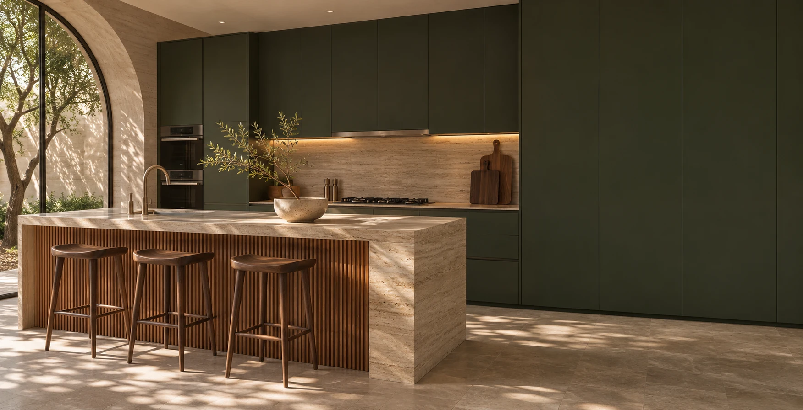

مطبخ جديد
نقيس المكان ونحدّد مواقع الحوض والموقد والثلاجة. ونحسب مساحة فتح الأدراج وباب الفرن قبل اعتماد التوزيع.
طلب عرض لمطبخ جديدنفصّل لك مطبخًا جديدًا أو نجدّد مطبخك الحالي. في التجديد نبدأ بفحص الخزائن وسطح العمل.


نقيس المكان ونحدّد مواقع الحوض والموقد والثلاجة. ونحسب مساحة فتح الأدراج وباب الفرن قبل اعتماد التوزيع.
طلب عرض لمطبخ جديدإذا كانت الخزائن بحالة جيدة، ممكن نحتفظ بها ونغيّر الأبواب أو السطح. نحدّد الأنسب بعد الفحص.
طلب عرض لتجديد مطبخنحدّد الأعمال والخامات بعد معاينة المطبخ ومعرفة المقاسات.
إذا ما قررت توزيع مطبخك، شوف الخيارات في دليل التخطيط.